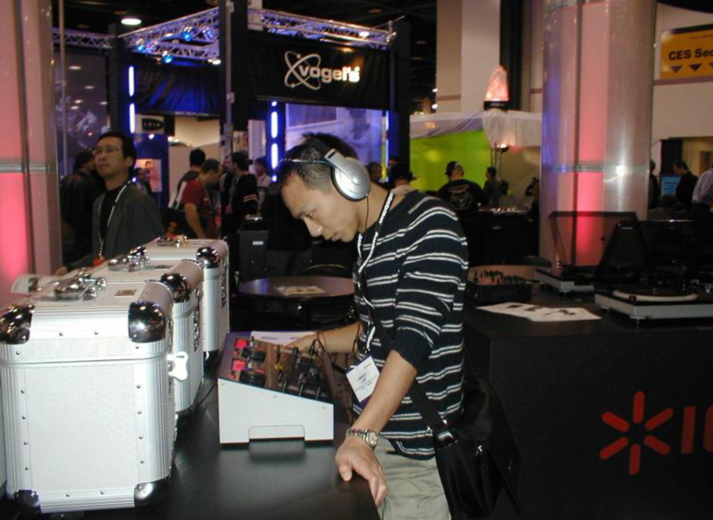
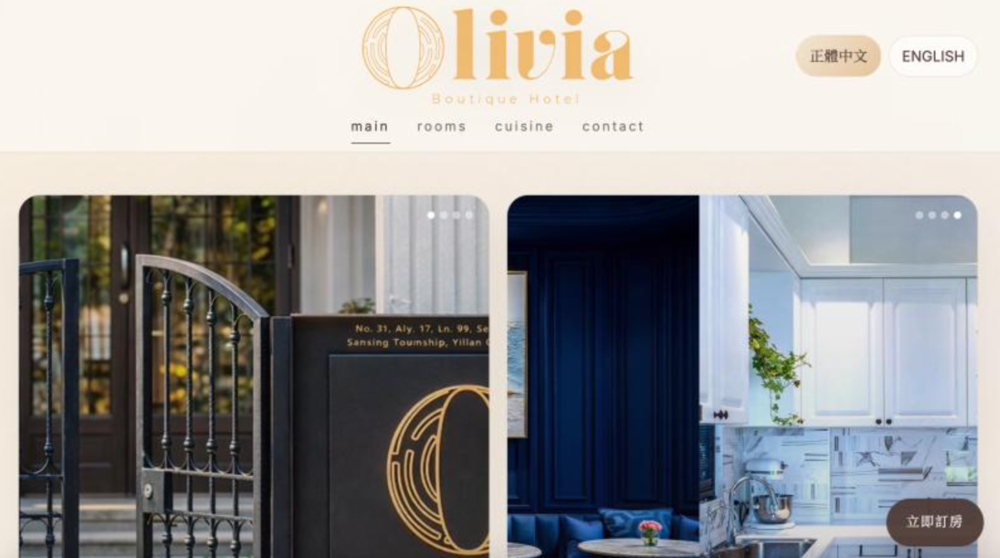
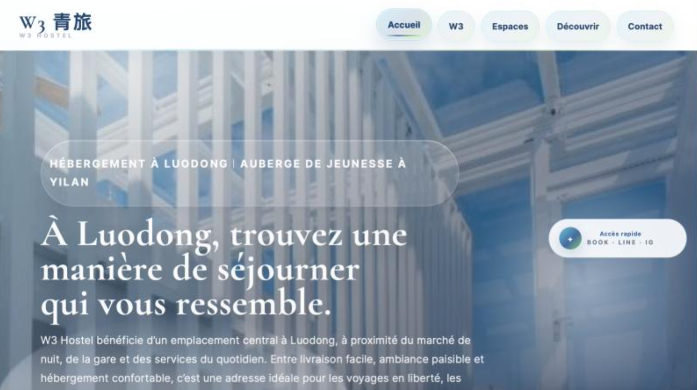
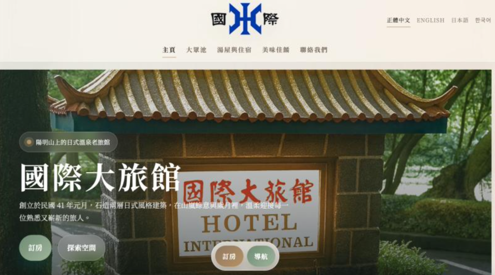

Playful Creative Localization
Bright pages, clear actions.
Page MaMa turns small-business stories into friendly, localized web pages with clearer structure, warmer copy, and a stronger path from attention to action.

Pop. Localize. Convert.
Creative Localization
Human review, tone adaptation, bilingual copy flow, and culturally natural page structure.
Landing Pages
Fast static pages for campaigns, events, booking flows, and brand introduction.
Small-Business Storytelling
Hospitality, service, education, and experience-based business content shaped for online visitors.
Cases
Selected visual references from the archive.

Olivia Boutique Hotel
Hospitality storytelling and booking-oriented page structure.

W3 Hostel
Traveler-friendly hierarchy and international visitor flow.

International Hotel
Legacy accommodation content refreshed for modern browsing.